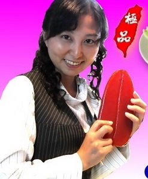
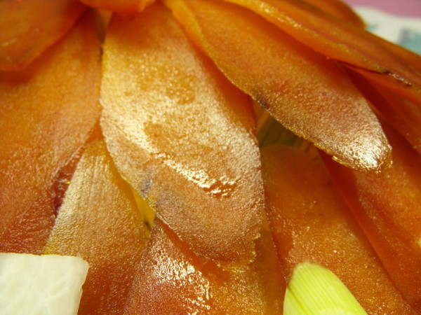
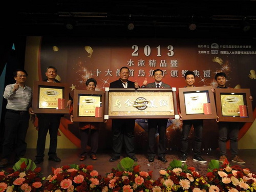

雲林在地 · 傳統美味
以用心製作的烏魚子，呈現雲林特色海味。
嚴選烏魚子，傳遞雲林在地海味。從節慶贈禮到親友分享，讓每一份心意更加珍貴。


| 規格 | 包裝內容 | 參考售價 |
|---|---|---|
| 資料載入中… | ||
實際規格及售價請以聯絡確認為準。
以用心製作的烏魚子，呈現雲林特色海味。
多樣禮盒與包裝選擇，送禮自用皆合宜。
分享製作、品味與歷年活動中的美好時光。


從烏魚子的製作與品嚐，到每一份禮盒的用心準備，我們希望把熟悉的在地味道分享給更多朋友。
一張張真實照片記錄著烏魚子的風味與人情。無論是家人團聚、年節送禮，都是值得珍藏的好滋味。
看看歷年活動紀錄 ↗原網站保存的 2013 年臺灣十大優質烏魚子競賽照片與得獎紀錄，現在直接呈現在首頁。
活動影像為歷年紀錄。

保存早年新聞報導的原始日期、記者署名與內容。

狂賀：雲林區漁會參加2013年台灣十大優質烏魚子全國競賽，再度榮獲團體組冠軍。
本會參加101年台灣十大優質烏魚子全國競賽，榮獲5~7兩等級組入選3名(朱崑宏、呂崑、林益賢)，7兩以上等級組入選3名(王偉名、莊國勝、莊國顯)，第四度蟬聯團體組冠軍。
其中王偉名、呂崑、莊國顯連續第四次入選全國十大。
由此證明雲林縣出產的烏魚子品質最好，是顧客最佳的購買選擇。
2013台灣十大優質烏魚子全國競賽恭喜以下本會得獎者
5～7兩規格：曾王淑秋女士、王智勇先生
7兩以上規格：林育鋒先生、王偉名先生
香噴噴的烏魚子讓你忍不住口水直流~
優質烏魚子 雲林獎最多
〔記者鍾麗華／台北報導〕台灣「十大優質烏魚子」昨天揭曉，產量超過全國一半的雲林縣為最大的贏家，十位獲獎者就囊括六人，且有三人是「四連霸」，雲林區漁會也獲團體獎。台南市、新竹縣則「全軍覆沒」。
呂崑 養殖到製作 全一手包辦
十大優質烏魚子從二○○九年起每年舉辦，呂崑、莊國顯、王偉名年年得獎。呂崑說，他從養殖到製作烏魚子一手包辦，製作烏魚子時，會請親朋好友試鹹度與味道，曬烏魚子時，也特別注意溫度與天氣。去年底做出一千多台斤烏魚子，現已賣光光。雖然有一手好功夫，但因兒子、媳婦都當老師，現在他已六十七歲，做不動時，只好把魚塭租出去。
莊國顯 若集滿10面獎 機會讓別人
莊國顯雖是四連霸，但家中已有六面獎牌，因為其中兩年同時獲得五到七兩與七兩以上兩獎項。莊國顯說：「如果集滿十面獎牌，就會把機會讓給別人，但下次比賽，還會再加油。」
他強調，他製作烏魚子前都會先將烏魚放血，血比較少，吃起來比較鮮甜，顏色也漂亮。因為用心，價格比別人貴二到三成。
王偉名 家族事業 超過一甲子
三十四歲的王偉名從小跟著父親、阿公做烏魚子。家族做烏魚子已有一甲子的歷史，不過，他們只做加工、沒有養殖。王偉名說，因為產量大，所以他們烏魚子品質好，卻是市場最低價。父母與弟弟、妹妹也都投入烏魚子的事業，爸爸、弟弟也曾獲獎。
農委會副主委胡興華致詞時指出，去年底海洋撈捕的烏魚已達六十七萬餘尾，過去年平均約四、五萬尾，前年三十萬尾，因此去年是近十年來最豐收的一年。
雖然海烏豐收，但無論養殖或野生烏魚子價格都漲二成。業者表示，油電雙漲帶動價格，一片五到六兩養殖烏魚子要二千二百元、八兩要二千四百元、九兩二千六百元。梓官區漁會課長黃志雄說，雖然海烏豐收，但野生烏魚子仍供不應求，五到六兩約二千四百元，現在野生與養殖烏魚子價差已拉近。
尚讚ㄟ烏魚子 都在雲林縣！
您知道烏魚子哪裡的最好吃？答案是雲林，農委會舉辦的全國烏魚子大賽，歷經一個月的評比，九十三家淘汰到最後，只選出十家金鑽烏魚子，雲林縣一口氣奪下六席獎牌，勝出的關鍵是什麼？評審說雲林的烏魚子，顏色呈現橙紅色，吃起來有點黏牙，鹹度適中，口感最好，是獲勝的關鍵。
一大片烏魚子烤到呈現橘黃色，鹹鹹的香味，光用聞的，令人口水直流。烏魚子不只切片吃，做法很多元。包上海苔，蔬菜變成日式手捲。將烏魚子包在小番茄外面，就成了美麗的歐式開胃菜，台灣烏魚子百百種，到底哪裡的烏魚子最好吃？一個月比賽，台灣十大金鑽烏魚子，雲林搶下六座優良獎牌，獲勝的原因是什麼？生的烏魚子呈現透明橙紅色，味道自然不加工，是雲林烏魚子勝出原因。雲林烏魚子產量佔全國八成，每片烏魚子一體成型，強調天然的製作過程，是最後脫穎而出，獲得評審青睞的關鍵。
完整影音新聞：原始華視新聞連結（外部舊連結是否仍有效，依新聞網站為準）
以上為原網站歷史活動及媒體報導資料，與本年度供貨及售價無關。
先電話或 LINE 洽詢，再下載訂購單填寫資料，並由服務人員確認訂購細節。
先向聯絡窗口確認商品、數量、價格與運費。
下載品牌提供的 Word 訂購單，填寫資料。